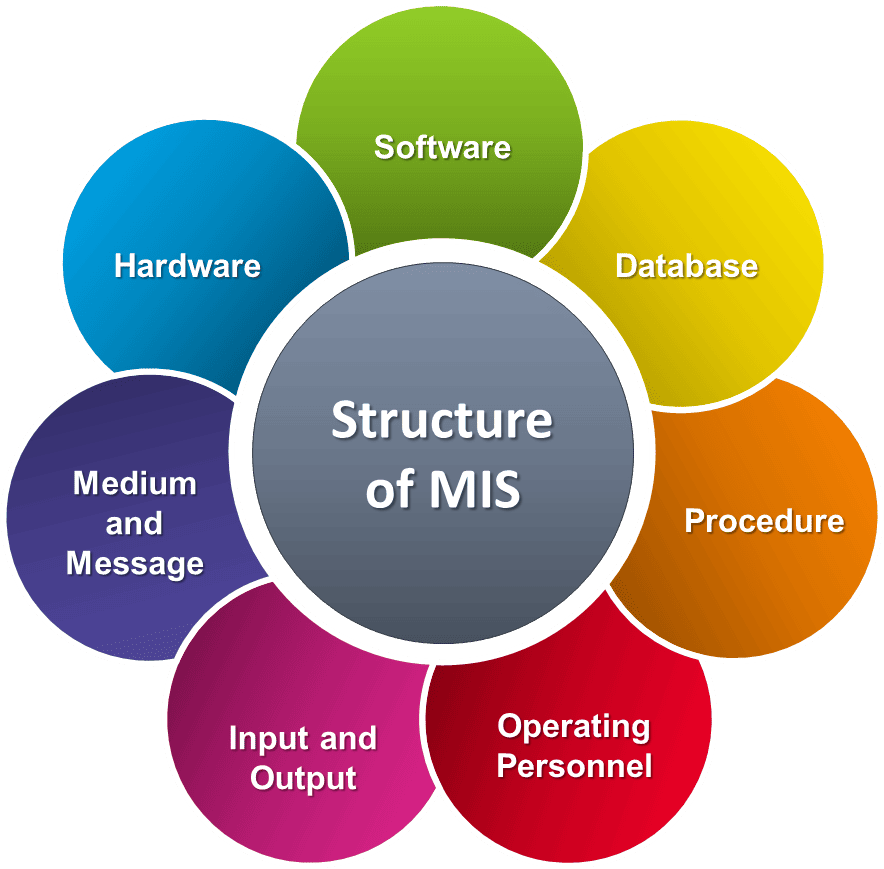

MIS & AI EthicsWebsite OverviewRishi PatelOctober 19, 2026Introduction Management Information Systems (MIS) play an important role in helping businesses organize information and make better decisions. As technology continues to develop, businesses are using artificial intelligence (AI) to improve efficiency and complete tasks more quickly. However, while AI provides many benefits, it also raises concerns about privacy, accuracy, and ethical responsibilities. Businesses must understand how to use AI responsibly to protect their customers and employees. Cybersecurity is also important because hackers and malware can put sensitive business information at risk. This website will explore how MIS and AI are used in businesses, the importance of responsible AI usage, and the security challenges that come with technology. AI-polished version: Management Information Systems (MIS) help businesses organize information and make better-informed decisions. As technology advances, many companies are adopting artificial intelligence (AI) to work more efficiently and complete tasks faster. While AI offers clear benefits, it also raises important concerns about privacy, accuracy, and ethics. To protect both customers and employees, businesses need to understand how to use AI responsibly. Strong cybersecurity is just as important, since hackers and malware can expose sensitive business data. This website explores how businesses use MIS and AI, why responsible AI use matters, and the security challenges that come with new technology. MIS Topic Overview
|